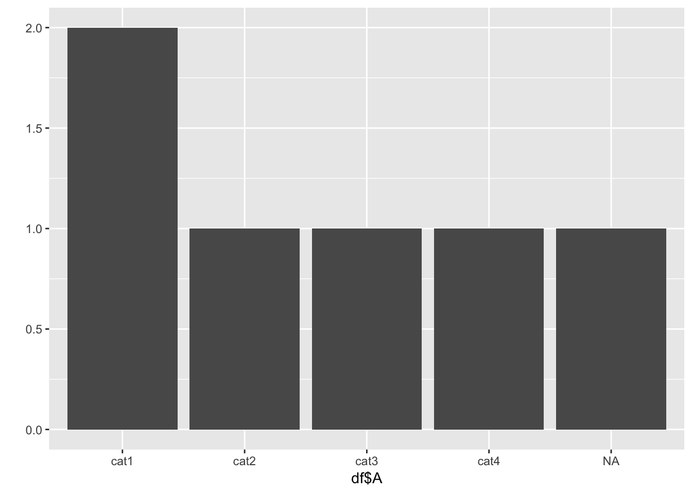
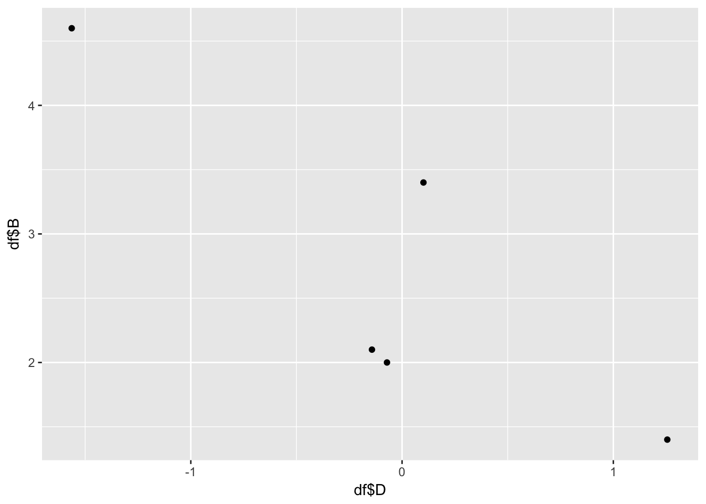
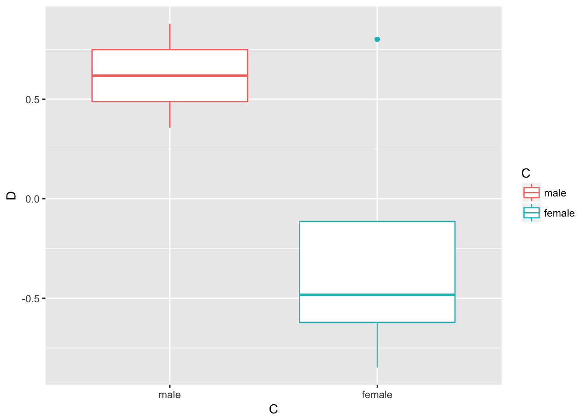
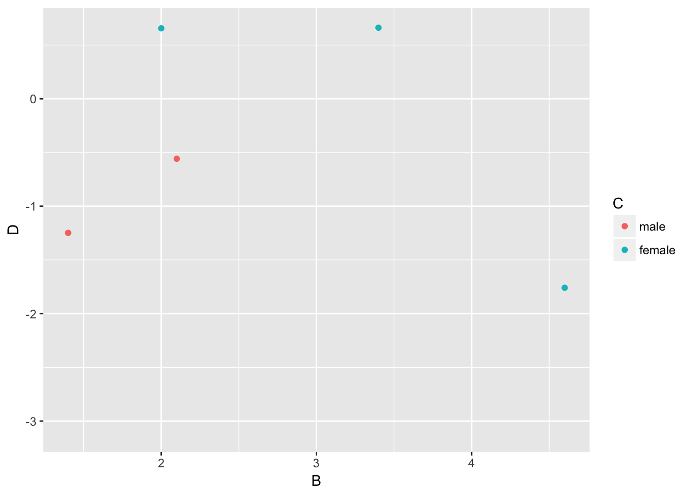
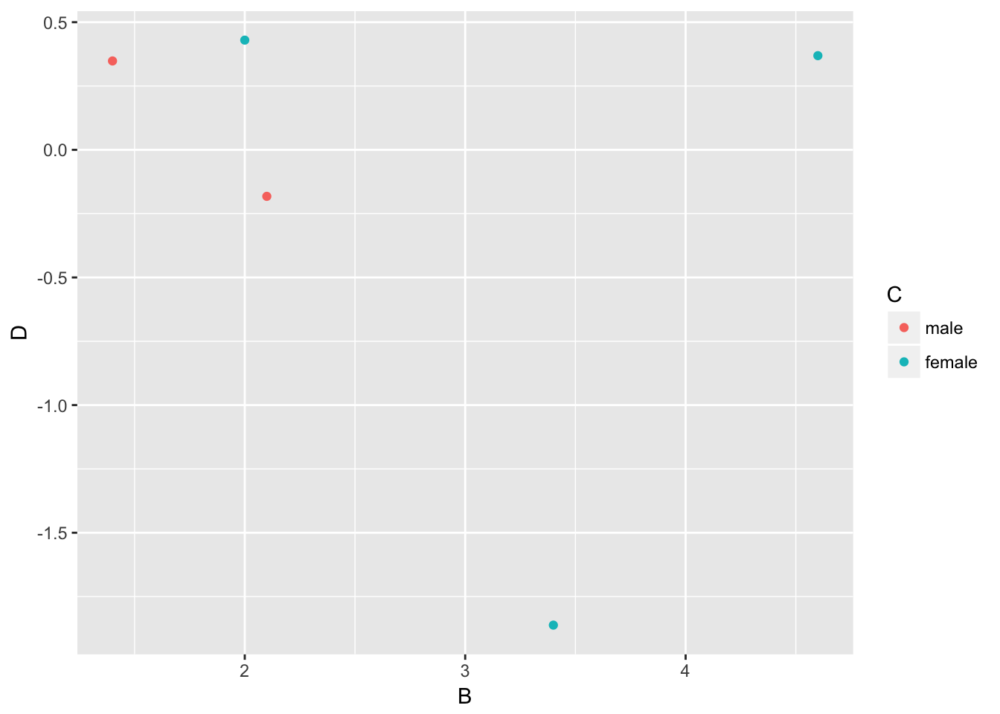
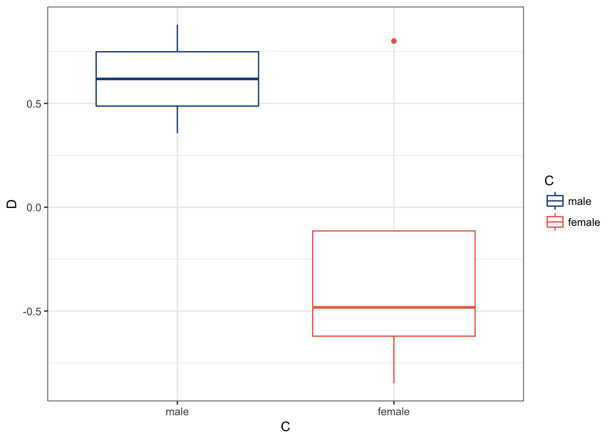

Chapter 3: Understanding and Describing Your Data
“If you can’t explain it simply, you don’t understand it well enough.”
— Albert Einstein
We are going to take what we’ve learned from the previous two chapters and use them together to have simple but powerful ways to understand your data. This chapter will be broken down into:
- Descriptive Statistics
- Visualizations
The two go hand-in-hand in understanding what is happening in your data. We are often most interested in three things when exploring our data: understanding distributions, understanding relationships, and looking for outliers or errors.
Descriptive Statistics
Several methods of discovering descriptives in a succinct way have been developed for R. My favorite (full disclosure: it is one that I made so I may be biased) is the table1 function in the furniture package.
This function has been designed to be simple and complete. It produces a well-formatted table that you can easily export and use as a table in a report or article.13
We’ll first create a ficticious data set and we’ll show the basic build of table1.
library(furniture)
df <- data.frame("A"=c(1,2,1,4,3,NA),
"B"=c(1.4,2.1,4.6,2.0,NA,3.4),
"C"=c(0,0,1,1,1,1),
"D"=rnorm(6))
table1(df, A, B, C, D)##
## |==============================|
## Mean/Count (SD/%)
## Observations 6
## A
## 2.2 (1.3)
## B
## 2.7 (1.3)
## C
## 0.7 (0.5)
## D
## -0.2 (0.9)
## |==============================|This quickly gives you means and standard deviations (or counts and percentages if there were categorical variables). We could have also used the pipe operator here if we wanted via:
df %>%
table1(A, B, C, D)##
## |==============================|
## Mean/Count (SD/%)
## Observations 6
## A
## 2.2 (1.3)
## B
## 2.7 (1.3)
## C
## 0.7 (0.5)
## D
## -0.2 (0.9)
## |==============================|It turns out, for we want “A” and “C” to be factors.
df$A <- factor(df$A, labels=c("cat1", "cat2", "cat3", "cat4"))
df$C <- factor(df$C, labels=c("male", "female"))
table1(df, A, B, C, D)##
## |==============================|
## Mean/Count (SD/%)
## Observations 6
## A
## cat1 2 (40%)
## cat2 1 (20%)
## cat3 1 (20%)
## cat4 1 (20%)
## B
## 2.7 (1.3)
## C
## male 2 (33.3%)
## female 4 (66.7%)
## D
## -0.2 (0.9)
## |==============================|So now we see the counts and percentages for the factor variables. But now we can take a step further and look for relationships. The code below shows the means/standard devaitions or counts/percentages by a grouping variable–in this case, C.
table1(df, A, B, D,
splitby = ~C)##
## |=================================|
## C
## male female
## Observations 2 4
## A
## cat1 1 (50%) 1 (33.3%)
## cat2 1 (50%) 0 (0%)
## cat3 0 (0%) 1 (33.3%)
## cat4 0 (0%) 1 (33.3%)
## B
## 1.8 (0.5) 3.3 (1.3)
## D
## 0.1 (0.6) -0.4 (1.1)
## |=================================|We can also test for differences by group as well (although this is not particularly good with a sample size of 5). It produces a warning since the \(\chi^2\) approximation is not accurate with cells this small.
table1(df, A, B, D,
splitby = ~C,
test=TRUE)##
## |=========================================|
## C
## male female P-Value
## Observations 2 4
## A 0.405
## cat1 1 (50%) 1 (33.3%)
## cat2 1 (50%) 0 (0%)
## cat3 0 (0%) 1 (33.3%)
## cat4 0 (0%) 1 (33.3%)
## B 0.162
## 1.8 (0.5) 3.3 (1.3)
## D 0.524
## 0.1 (0.6) -0.4 (1.1)
## |=========================================|Finally, we can include missingness in the table for factors.
table1(df, A, B, D,
splitby = ~C,
test=TRUE,
NAkeep = TRUE)##
## |=========================================|
## C
## male female P-Value
## Observations 2 4
## A 0.405
## cat1 1 (50%) 1 (25%)
## cat2 1 (50%) 0 (0%)
## cat3 0 (0%) 1 (25%)
## cat4 0 (0%) 1 (25%)
## NA 0 (0%) 1 (25%)
## B 0.162
## 1.8 (0.5) 3.3 (1.3)
## D 0.524
## 0.1 (0.6) -0.4 (1.1)
## |=========================================|So with three or four short lines of code we can get a good idea about variables that may be related to the grouping variable and any missingness in the factor variables. There’s much more you can do with table1 and there are vignettes and tutorials available to learn more.14
Other quick descriptive functions exist; here are a few of them.
summary(df) ## descriptives for each variable in the data
library(psych) ## install first
describe(df) ## produces summary statistics for continuous variables
library(Hmisc) ## install first
Hmisc::describe(df) ## gives summary for each variable separatelyVisualizations
Understanding your data, in my experience, generally requires visualizations. If we are going to use a model of some sort, understanding the distributions and relationships beforehand are very helpful in interpreting the model and catching errors in the data. Also finding any outliers or errors that could be highly influencing the modeling should be understood beforehand.
For simple but appealing visualizations we are going to be using ggplot2. This package is used to produce professional level plots for many journalism organizations (e.g. five-thrity-eight). These plots are quickly presentation quality and can be used to impress your boss, your advisor, or your friends.
Using ggplot2
This package has a straight-forward syntax. It is built by adding layers to the plot.
library(ggplot2) ## first install using install.packages("ggplot2")First, we have a nice qplot function that is short for “quick plot.” It quickly decides what kind of plot is useful given the data and variables you provide.
qplot(df$A) ## Makes a simple histogram
qplot(df$D, df$B) ## Makes a scatterplot## Warning: Removed 1 rows containing missing values (geom_point).
For a bit more control over the plot, you can use the ggplot function. The first piece is the ggplot piece. From there, we add layers. These layers generally start with geom_ then have the type of plot.
Below, we start with telling ggplot the basics of the plot and then build a boxplot. The x-axis is the variable “C” and the y-axis is the variable “D” and then we color it by variable “C” as well.
ggplot(df, aes(x=C, y=D)) +
geom_boxplot(aes(color = C))
Here’s a few more examples:
ggplot(df, aes(x=C)) +
geom_bar(stat="count", aes(fill = C))
ggplot(df, aes(x=B, y=D)) +
geom_point(aes(color = C))## Warning: Removed 1 rows containing missing values (geom_point).
Note that the warning that says it removed a row is because we had a missing value in “C”.
We are going to make the first one again but with some aesthetic adjustments. Notice that we just added two extra lines telling ggplot2 how we want some things to look.15
ggplot(df, aes(x=C, y=D)) +
geom_boxplot(aes(color = C)) +
theme_bw() +
scale_color_manual(values = c("dodgerblue4", "coral2"))
The theme_bw() makes the background white, the scale_color_manual() allows us to change the colors in the plot. You can get a good idea of how many types of plots you can do by going to http://docs.ggplot2.org/current. Almost any informative plot that you need to do as a researcher is possible with ggplot2.
We will be using ggplot2 extensively in the book to help understand our data and our models as well as communicate our results.